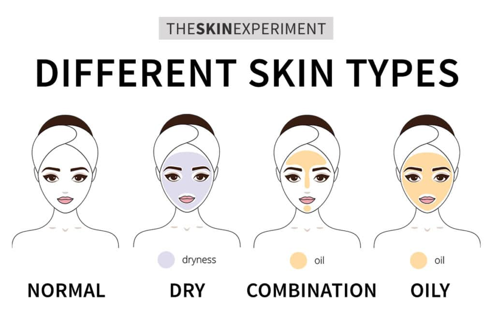

Types of Skin
According to the American Academy of Dermatology (AAD), there are five primary types of skin: oily, dry, normal, combination, and sensitive.1 Each skin type has its own set of unique characteristics and needs that can affect the look and feel of your complexion. By first understanding what type of skin you have, you can begin to make informed decisions—giving your skin the customized care and protection it needs now and for years to come. If you’re not sure what your skin type is, keep reading. We’re covering all the basics about how to identify your skin type below, plus tips for choosing the ideal skincare products and routines for each type.
